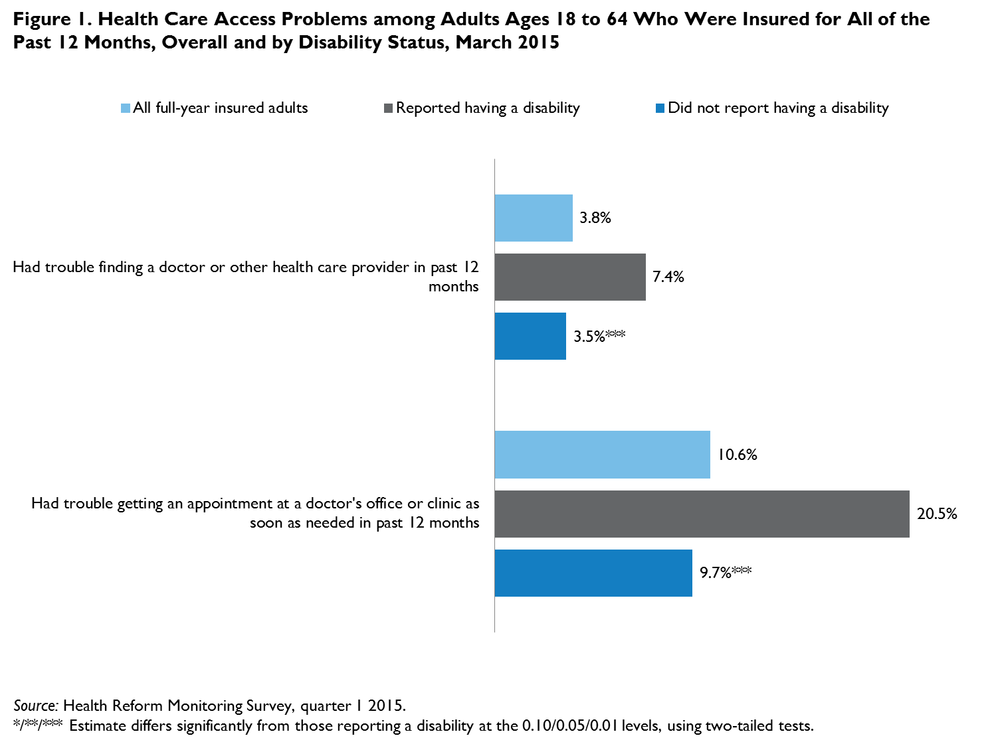

QuickTake: Even with Coverage, Many Adults Have Problems Getting Health Care, with Problems Most Prevalent among Adults with Disabilities
Michael Karpman and Sharon K. LongSeptember 24, 2015
The expansion of health insurance coverage under the Affordable Care Act (ACA) is expected to reduce the cost of obtaining health care for millions of newly insured adults. However, even with coverage, many adults continue to face financial and nonfinancial barriers that limit their access to health care (Kullgren et al. 2012). Financial barriers include cost sharing and services not covered by insurance that lead to high out-of-pocket health care costs, which are associated with unmet needs for care (Collins et al. 2015). Examples of nonfinancial barriers include difficulty getting to a doctor’s office or clinic, finding a doctor who will accept certain types of insurance, or getting a timely appointment.
In addition, challenges getting health care are unevenly distributed across subgroups of adults. Federal survey data show that before full ACA implementation, adults with disabilities were more likely to experience access problems than adults without disabilities (Agency for Healthcare Research and Quality 2014). They were also more likely to be poor, limited in the kind or amount of work they can do, and enrolled in Medicare or Medicaid (Brault 2012). The potential for improved access to care because of increased coverage will be lessened if other barriers to care, particularly those that affect adults with disabilities, are not addressed.
To explore financial and nonfinancial access barriers in the wake of the ACA coverage expansions, we used data on a nationally representative sample of nonelderly adults (ages 18 to 64) from the March 2015 round of the Urban Institute’s Health Reform Monitoring Survey (HRMS). We focused on adults who reported being insured for all 12 months before the survey (full-year insured) to analyze access barriers that were not the result of differences in coverage status. We examined access barriers among the overall population of full-year insured adults and by self-reported disability status as of March 2015.1
Among full-year insured adults, 3.8 percent reported having trouble finding a doctor or other health care provider in the past 12 months, and 10.6 percent reported trouble getting an appointment at a doctor’s office or clinic as soon as one was needed (figure 1). However, compared with adults who did not report a disability, those who reported a disability were significantly more likely to report trouble finding a doctor (7.4 percent versus 3.5 percent) and getting an appointment as soon as needed (20.5 percent versus 9.7 percent).  We also found differences by disability status in the share of full-year insured adults reporting that they did not get health care in the past 12 months for various financial and nonfinancial reasons (figure 2). For instance, 25.0 percent of adults with disabilities reported an unmet need for general doctor care because they could not afford it or because their health plan would not pay for a treatment, compared with 13.6 percent of other full-year insured adults. When we examined those two reasons separately, we found that most of this difference could be attributed to a larger share of adults with disabilities reporting an unmet need because their health plan would not pay for a treatment (15.1 percent versus 5.2 percent; data not shown). However, there was no statistically significant difference by disability status in the share of full-year insured adults reporting unmet needs for general doctor care because they could not afford it (data not shown).
Further highlighting disparities in access related to health insurance, adults with disabilities were about three times as likely as other full-year insured adults to report an unmet need for care because a doctor or hospital would not accept their health insurance (10.1 percent versus 3.2 percent). These differences may be related to the higher share of adults with disabilities who have public coverage (46.8 percent versus 15.5 percent of adults who did not report a disability; data not shown).
Adults with disabilities were also nearly twice as likely as other adults to report unmet needs because of problems with the accessibility of a doctor’s office or clinic (16.8 percent versus 9.2 percent), including difficulty getting to a doctor’s office or clinic when it was open, taking too long to get to a doctor’s office or clinic from home or from work, and not having a way to get to a doctor’s office or clinic. In addition, adults with disabilities were more likely to report an unmet need because they could not get an appointment soon enough.
These results suggest that lowering barriers to health care access among insured adults, including those with disabilities, will require multifaceted efforts to address issues such as provider supply, network adequacy, coverage of needed services, and transportation options. They also suggest that reducing disparities in access to health care by disability status will require greater attention to barriers beyond affordability. Because a disproportionate share of full-year insured adults with disabilities reported being enrolled in public coverage, policies targeting Medicaid reimbursement levels, covered benefits, provider networks, and transportation may have a greater effect on these disparities than reforms targeting adults with private coverage.
References
Agency for Healthcare Research and Quality. 2014. 2013 National Healthcare Quality Report. Publication No. 14-0005. Rockville, MD: Agency for Healthcare Research and Quality.
Brault, Matthew W. 2012. Americans with Disabilities: 2010. Current Population Report P70-131. Washington, DC: US Census Bureau.
Collins, Sara R., Petra W. Rasmussen, Sophie Beutel, and Michelle M. Doty. 2015. The Problem of Underinsurance and How Rising Deductibles Will Make It Worse. New York: The Commonwealth Fund.
Dohrmann, Sylvia, Daifeng Han, and Leyla Mohadjer. 2006. “Residential Address Lists vs. Traditional Listing: Enumerating Households and Group Quarters.” Proceedings of the American Statistical Association 106: 2959—64.
Kullgren, Jeffrey T., Catherine G. McLaughlin, Nandita Mitra, and Katrina Armstrong. 2012. “Nonfinancial Barriers and Access to Care for U.S. Adults.” Health Services Research 47 (1, part 2): 462—85.
About the Series
For more information on the HRMS and for other QuickTakes in this series, visit www.urban.org/hrms.
Note 1 Adults with disabilities include those who reported a physical or mental condition, impairment, or disability that affects their daily activities or that requires them to use special equipment or devices, such as a wheelchair, a telecommunication device for the deaf, or another communication device. It is possible that the HRMS sample may underrepresent adults with disabilities because some of these adults are not able to complete a self-administered online survey (unless a caregiver responds on their behalf), and because of noncoverage of some adults with disabilities who live in group quarters in the sampling frame used for the Internet panel from which HRMS samples are drawn (Dorhmann, Han, and Mohadjer 2006). |

 |
 |
 |